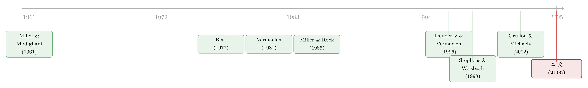

宣布回购，却又不回购——一个不带任何承诺的好消息，凭什么值 3%？
本文读的是 Oded (2005, Review of Financial Studies)：公开市场回购计划 (open-market repurchase program) 的宣告平均带来约 3% 的正收益，可这种宣告对公司没有任何约束力，很多公司宣布后一股都不买。作者用一个三期拍卖模型证明：在单一类型的世界里，宣告本身不创造任何价值（公告收益恰为零），它只是把财富从「将来要卖股的人」转移给「将来不卖的人」；而一旦引入好、坏两类公司，正是这套信息交易的盈亏，让好公司可以零成本地把自己和坏公司区分开来——回购计划于是成了一种罕见的「非耗散信号 (nondissipative signaling)」。
1 一个让人不安的事实
先把这桩公案摆在桌面上。
一家公司站出来说：「我打算在未来一段时间里，到公开市场上买回自己的股票。」话音刚落，股价平均往上跳 2.6%–4.5%（不同样本期不一样，姑且记成 3%）。市场显然把它当成了好消息。
可问题是——这句话什么都没承诺。
在美国，公开市场回购计划不像荷兰式拍卖 (Dutch auction) 或固定价格要约收购 (fixed-price tender offer) 那样，会把公司锁死在「必须买够多少股」上。公司宣布了计划，可以买，也可以不买；可以买一点，也可以一股不买。事实上，新闻里的估计是实际回购率只有 30%–40%（Stephens and Weisbach (1998) 给出的数字高些，70%–80%），而 1987 年股灾之后，一大批公司宣布了回购、最后几乎没动手 [Netter and Mitchell (1989)]。
于是张力就出来了：一个不带任何约束的声明，为什么会被市场当成真金白银的好消息来定价？ 更尖锐地说——既然大家都知道相当一部分宣告最后会落空，为什么价格还会涨？
这正是 Oded 想回答的问题。而他给出的答案，妙就妙在它先否定了一个流行的直觉，再在废墟上重建出一个更扎实的解释。
2 先看一个被人讲滥了的故事：期权
在 Oded 之前，关于回购计划最讨巧的一个解释来自 Ikenberry and Vermaelen (1996)。他们说：回购计划本质上是公司送给自己的一份期权——一份「如果将来市价低于真实价值，就用市价换回真实价值」的交换期权。宣告，就是公司给自己授予了这份期权；期权有正的价值，所以股价上涨。
这个故事的好处是它绕开了「不承诺」的难题：期权本来就不需要持有人承诺行权，所以「宣告而不回购」毫无矛盾——你买了张看涨期权，到期不行权，再正常不过。
听上去天衣无缝。但 Oded 追问了一句真正关键的话：这份期权，是从谁手里拿来的？
期权不会凭空产生。如果公司（老股东）通过宣告白得了一份有价值的期权，那么市场上一定有人卖空了这份期权——谁呢？是那些将来从公司手里买股票的新股东。公司之所以能靠这份期权赚钱，是因为它掌握私有信息：只在股价被低估（真实价值高）的时候才出手回购。可这种知情交易 (informed trading) 对市场而言是一场零和博弈：公司赚的每一分，都是新股东亏的每一分。
那么，一个理性的市场会怎么反应？它当然知道自己在回购期里要面对逆向选择 (adverse selection)，于是不肯出高价。结果是：宣告之后，市价不仅要反映期权的价值，还要反映「未来价格会因这场知情交易而被压低」的预期。在竞争性市场里，这两股力量在现值上正好抵消。
于是反转出现了——
在单一公司类型的世界里，回购计划宣告对当前股价的影响恰好是零。那份「送给自己的期权」根本没有给老股东创造任何价值。期权解释，作为公告收益的来源，是站不住脚的。
3 模型：三个日期，一场拍卖
要把上面这段直觉变成定理，需要一个干净的模型。Oded 的设定极简，但每个假设都卡在要害上。
时间与偏好。 三个日期 \(t_0, t_1, t_2\)；所有人风险中性；无风险利率为零；没有税收和交易成本；公司全股权融资，经理替原始股东最大化期末财富。
公司价值。 在 \(t_0\)，公司拥有一笔安全资产（固定价值 \(u\)）和一个风险项目 \(\tilde{c}\)。到 \(t_1\)，项目价值实现：以概率 \(q>0.5\) 实现为 \(C\)，以概率 \(1-q\) 实现为 \(-C\)，其中 \(0 $$
V_1 = u + C \quad \text{or} \quad V_1 = u - C.
$$ 由风险中性与零利率，\(t_0\) 的公司价值就是期望： $$
V_0 = u + (2q-1)C.
$$ 到 \(t_2\) 价值不变（\(V_2 = V_1\)），公司被清算，按真实价值分给期末股东。 流动性冲击是整个机制的发动机。 \(t_0\) 时有 \(N\) 股分散在原始股东手里。到 \(t_1\)，其中一部分股东会被迫卖出，总量是一个事前可被市场预期到的常数 \(K\) 股——这些是「短期股东」；剩下的人能撑到 \(t_2\) 才卖，是「长期股东」。关键在于：在 \(t_0\)，没有人知道自己将来会属于哪一类。 这一点后面会成为整篇文章的支点。 拍卖机制。 Oded 不想让回购期拖上一年，于是把它压缩成 \(t_1\) 的一场拍卖：\(K\) 股被摆出来卖给 \(M\ge 2\) 个外部竞买者。如果公司在 \(t_0\) 宣布了计划，它也能进场——但只为 \(g 把这一切收进期末财富，就是整篇论文的核心方程。原始股东里，短期股东在 \(t_1\) 卖出 \(K\) 股、拿到 \(K P_1\)；长期股东在 \(t_2\) 卖出 \(N-K\) 股、拿到 \((N-K)P_2\)： 公司的问题，就是在「宣告 / 不宣告」之间选一个，最大化这份期末财富的期望： $$
\max_{A}\; \mathbb{E}[W_2], \qquad A\in\{\text{announce, do not announce}\}.
$$ 先看不宣告的基准。这时公司虽然知道 \(\tilde{c}\) 的实现，但它进不了 \(t_1\) 的市场，私有信息一文不值。Oded 的 命题 1 给出： $$
P_0 = P_1 = \frac{V_0}{N} = \frac{u + (2q-1)C}{N},\quad
P_{2H} = \frac{u+C}{N},\quad
P_{2L} = \frac{u-C}{N}.
$$ 短期股东以 \(P_1=P_0\) 卖出，盈亏为零；长期股东高实现时赚、低实现时亏，期望盈亏也是零。没有知情交易，就没有任何一方被系统性地占便宜。 再看宣告。命题 2 是全文第一个「锚」： 在单一类型经济中，宣告之后 \(P_0\) 与不宣告时完全一样；但 \(t_1\) 的清算价 \(P_1\) 被压低，而高实现时的 \(P_{2H}\) 被抬高。 \(P_{2H}\) 被抬高的逻辑可以写得很干净。高实现时公司行权、用 \(P_1\) 买走 \(g\) 股，剩下的真实价值在更少的股数上分摊： $$
P_{2H} = \frac{(u+C) - g P_1}{N-g}.
$$ 因为公司是用低于真实价值的 \(P_1\) 买进的（\(P_1<(u+C)/N\)），这笔买卖给留下来的长期股东赚了钱，所以 \(P_{2H}\) 比不宣告时更高。而 \(P_1\) 之所以被压低，正是因为外部竞买者知道：只要价值高，公司就会用优先权抢走便宜筹码，所以他们不肯出高价——逆向选择被定进了价格里。（\(t_1\) 清算价 \(P_1\) 的完整闭式解见原文式 (6)，其要点只有一句：它严格低于不宣告时的 \(t_1\) 价格。） 把两头一拼，结论就锁死了：\(P_0\) 纹丝不动。宣告没有创造价值，它只是在原始股东内部搬了一次钱——短期股东因为卖价 \(P_1\) 被压低而受损，长期股东因为知情交易的红利而受益。这正是第 2 节那段直觉的严格版本。Brennan and Thakor (1990) 早就提示过回购里存在这种财富再分配，只是 Oded 把它内生进了一个均衡价格里。 读到这里，你可能会觉得作者把自己逼进了死角：他刚刚证明了回购宣告不该有公告收益，可现实里明明有 3%。这恰恰是反转的引信。 到这里，自然的问题是：既然单一类型下公告收益为零，那现实中的 3% 从哪来？ Oded 的答案是——引入异质性。设有好、坏两类公司，好公司的价值分布 \(\tilde{c}_G\) 不仅期望更高，而且方差更大（直觉是：好公司有更多投资机会，而机会天然比在手资产更有风险）。公司替原始股东最大化期末财富的期望。 现在把第 4 节那台「搬钱机器」接上这个异质性，奇迹就发生了。 回购这份期权，对好公司更值钱——因为它的价值方差更大，知情交易能榨出的利润也更多。所以好公司宣告计划。它们做多这份期权，市场做空它；理性定价下，好公司股票的价格被设定成：短期股东的损失，恰好被长期股东的预期收益抵消。 那坏公司要不要冒充？假设它也宣告。这时它的短期股东会以一个反映了好公司期权价值（知情交易强度）的价格卖出——看上去占了便宜；可它的长期股东，只能享受到坏公司那份更小的期权价值（方差低、知情交易弱）。一进一出，对一家替原始股东整体算账的坏公司来说，模仿的「成本」高于「收益」。 于是分离均衡 (separating equilibrium) 成立的条件，是好公司能用自己知情交易的量级，把坏公司吓退。决定均衡的，是「两类公司期权价值之差」与「两类公司期望价值之差」之间的拉锯。 这套逻辑最漂亮的地方，是它给了我们一个反直觉的结论： 在分离均衡里，好公司宣告计划不付出任何成本——它们短期股东的损失，被长期股东的知情交易收益完全抵消；真正觉得「太贵」而不敢宣告的，是坏公司。 这就是所谓非耗散信号：和绝大多数信号故事（多发股利、举债、IPO 抑价）不同，公开市场回购的信号对好公司是免费的。Oded 据此点明了 Ikenberry-Vermaelen 那份期权的真正作用：它带来公告收益，不是因为知情交易「创造」了价值（我们已经证明那是零和的），而是因为这些知情交易的盈亏结构，恰好让好公司能把自己标记出来。这，是本文自认的两点贡献之一；另一点，就是指出回购计划是一种非耗散的信号工具。 模型还顺带预测了三件与经验证据相符的事：公告收益为正；公告后短期预期收益偏低、长期偏高；公告后的长期收益与实际回购量正相关——这恰好解释了为什么「宣告而不回购」并不构成悖论：不回购的，多半是那些价值没那么高、本就不该大买的状态。 把这条线索捋一遍，能看清 Oded 站在哪里。 源头当然是 Miller and Modigliani (1961)：完美市场里派现政策无关紧要。此后所有的派现理论，都是在往这个「无关」命题里加摩擦——税收、代理、信息。（关于代理那一支，可参见《现金为什么一定要「还」出去？——四十年后，重读 Jensen 的自由现金流》。）Oded 走的是信息这一支。 信号理论这条河又分两道。一道是耗散信号：Bhattacharya (1979)、John and Williams (1985)、Miller and Rock (1985) 用股利当作有成本的信号，Ofer and Thakor (1987)、Persons (1994) 把它推广到要约收购回购。另一道是非耗散信号：Ross (1977)、Heinkel (1982)、Brennan and Kraus (1987) 让资本结构充当无成本信号，Bhattacharya (1980) 让股利无成本地传递盈利。Oded 这篇，正是把公开市场回购送进了第二道河——这是文章自称「据我所知第一个」做到的事。 经验那条线则从 Vermaelen (1981) 起步（回购与市场信号的早期证据），经 Comment and Jarrell (1991)、Ikenberry, Lakonishok, and Vermaelen (1995, 市场对回购的反应不足)，到 Stephens and Weisbach (1998) 量出实际回购率、Grullon and Michaely (2002) 论证回购对股利的替代。Oded 的模型，正是要为这一摞经验事实——尤其是「不承诺却有公告收益」「很多公司不回购」——提供一个统一的理论解释。  (a) 几个可能的疑问 Q：这和「股利信号」模型到底差在哪？为什么非要单独造一个？ 差在「成本」的来源。股利信号是耗散的：好公司靠真金白银地多派现（牺牲税收或现金）来证明自己，成本由好公司承担。Oded 的回购信号是非耗散的：好公司宣告不花一分钱，是坏公司模仿时才会因「短期股东高价卖、长期股东低价值」的错配而受损。换句话说，分离的成本压在了坏公司身上，而不是好公司身上。 Q：「期权解释」既然被否掉了，为什么作者还要保留 Ikenberry-Vermaelen 的期权？ 因为期权这个对象是对的，错的是它的功能。Oded 没有否认回购计划赋予公司一份有价值的期权；他否认的是「这份期权通过交易收益给老股东创造了净价值」（那是零和的）。期权真正的用处，是它产生的知情交易盈亏，构成了一个能让好公司分离出来的信号载体。 Q：「公告收益为零」这个反直觉结论，靠的是哪个假设？ 靠市场理性 + 竞争性 + 零和。一旦公司靠私有信息在 \(t_1\) 占便宜，新股东必然预期到逆向选择而压低出价，于是期权价值与未来被压低的价格在现值上对冲。任何让这个对冲不完全的摩擦（流动性约束的异质分布、声誉、税收），都会让公告收益偏离零——这也正是作者引入流动性约束分布后能谈「财富转移」的原因。 Q：模型说「宣告而不回购」不矛盾，可它真能解释 30%–40% 的实际回购率吗？ 能解释方向，未必能解释量级。模型里公司只在高实现状态行权，所以「有时不买」是均衡的一部分，且长期收益与实际回购量正相关——这与证据一致。但模型是两状态、单期拍卖的极简结构，不该指望它精确命中 30%–40% 这个数；它给的是定性机制，不是定量校准。 Q：为什么「短期 vs 长期股东」这个划分如此要命？ 因为没有它，就没有财富转移，也就没有可被坏公司「踩中」的成本。正是「\(t_0\) 时谁也不知道自己将来要不要被迫卖股」这一层无知，让市价成为所有人共同面对的价格；当坏公司冒充时，它的短期股东享受了好公司的高定价、长期股东却只兑现了坏公司的低价值，错配由此产生。 Q：这个模型抽掉了声誉、代理、税收，是不是抽得太狠？ 是有意为之。作者要证明的是「仅靠关于内在价值的非对称信息，就足以」生成公告收益与非耗散信号，所以把其他渠道全部关掉，让机制看得干净。代价是它无法说话于现实中显然存在的代理动机（自由现金流）与税收动机——这些留给了别的模型。 (b) 几个可能的研究问题与提案 把这套「非耗散信号」搬到公司债回购 / 债务回购上。
【经济故事】公司在二级市场低价买回自家债券，同样不带强约束、同样掌握私有信息（自己的违约概率）。若好公司（信用真实改善者）能靠债券回购的知情交易免费分离出来，就能解释债券回购公告的利差反应。
【可行性】中。需要 TRACE 级别的成交数据来识别实际回购量、CDS 或利差衡量信号价值；难点在于债券回购的披露比股票更稀、样本偏小，识别「实际回购」本身就费劲。 外资持有人结构与回购信号的强弱。
【经济故事】Oded 的机制依赖「短期 vs 长期股东」的构成。外资往往被视为换手更快的短期资金；若一家公司外资占比高，短期股东比例上升，则财富转移与信号成本结构都会改变，公告收益应当随之系统性变化。
【可行性】中高。持股期限/换手可由 13F、FactSet 持有人数据近似，外资占比可得；用持股结构的外生变动（如指数纳入带来的被动外资）做识别会更干净。 流动性环境如何调制回购公告收益。
【经济故事】模型里 \(t_1\) 的清算价被逆向选择压低，本质是一种流动性折价。那么在市场整体流动性枯竭时（如危机），回购宣告的信号价值与财富转移应当被放大。
【可行性】高。把回购公告的 CAR 对宣告时点的市场流动性指标回归即可；这条线与《市场快「干涸」的那一刻：股与债的流动性，原来听的是同一个人》的视角天然契合。 「不回购」是不是一种可被识别的坏消息？
【经济故事】模型预测公告后长期收益与实际回购量正相关。反过来看，那些宣告后迟迟不动手的公司，是否在事后被证明是「价值没那么高」的一类？这能为「执行率」赋予信息含量。
【可行性】高。Stephens-Weisbach 式的实际回购数据 + 长期 BHAR 即可，识别上要小心内生性（不回购可能因为价格已涨上去而非价值低）。 与「私下协商回购」的对照。
【经济故事】公开市场回购是匿名的，这正是 Oded 强调的、它区别于要约收购的关键。那么当回购不匿名（私下协商）时，信号机制会怎样断裂或重组？
【可行性】中。可与《买回自己的股票，凭什么有人赚、有人亏？——私下回购的四张面孔》对照，用交易对手身份数据做横截面比较。 这篇文章最让我佩服的，是它先拆后立的结构勇气。作者完全可以顺着 Ikenberry-Vermaelen 的期权故事往下写，落个皆大欢喜。但他偏要先用一个干净的零和论证，把「期权创造价值」这个人人爱讲的直觉证伪——证明在单一类型下公告收益恰为零——再在这片废墟上，用同一份期权的知情交易盈亏，搭出一个非耗散信号的解释。这种「同一块砖，先证明它撑不起房子，再让它去当地基」的写法，是真正的理论功力。它对「不承诺却有公告收益」「很多公司不回购」这两个长期刺眼的事实，给了一个内部自洽的回答。 但要老实说几点担忧。其一是识别基本靠机制而非数据：全文是一个两状态、单期拍卖的理论，它能定性地复现经验规律，却没有结构估计，无法回答「这个渠道究竟解释了 3% 中的多少」。其二是那台拍卖机器太特殊：公司优先权、\(g 我最想看到的后续，是把这套「短期 vs 长期股东 + 非耗散信号」的框架，接到持有人结构的真实数据上：当一家公司的股东构成（机构 vs 散户、本土 vs 外资、长线 vs 高换手）发生外生变动时，回购公告收益是否朝模型预言的方向移动？如果是，那将是给这个优雅理论的一次真正的经验加冕。4 第一个结论：宣告不动现价，只在内部「搬钱」
5 真正关键的一步：把「搬钱」变成「信号」
6 文献脉络
7 评论与延伸（Q&A + 研究方向）
8 我的判断
参考文献